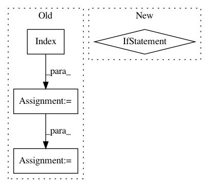

1505a06c369e033485ab3fea9b9bf9967bfd81e4,recordlinkage/indexing.py,Pairs,index,#Pairs#Any#,197
Before Change
// If deduplication, remove the record pairs that are already included. For example: (a1, a1), (a1, a2), (a2, a1), (a2, a2) results in (a1, a2) or (a2, a1)
elif self.deduplication:
B = pandas.DataFrame(self.df_a, index=pandas.Index(self.df_a.index, name=str(self.df_a.index.name) + "_"))
pairs = index_func(self.df_a, B, *args, **kwargs)
// Remove all double pairs!
pairs = pairs[pairs.get_level_values(0) < pairs.get_level_values(1)]
pairs.names = [self.df_a, self.df_a]
self.n_pairs = len(pairs)
After Change
// If there are no chunks, then use the first item of the generator
if self.chunks is None or self.chunks == (None,None):
return next(self._iterindex(index_func, *args, **kwargs))
// Use the chunks
else:
return self._iterindex(index_func, *args, **kwargs)
def full(self, *args, **kwargs):
full()
In pattern: SUPERPATTERN
Frequency: 3
Non-data size: 4
Instances
Project Name: J535D165/recordlinkage
Commit Name: 1505a06c369e033485ab3fea9b9bf9967bfd81e4
Time: 2016-06-08
Author: jonathan.de.bruin@swov.nl
File Name: recordlinkage/indexing.py
Class Name: Pairs
Method Name: index
Project Name: catalyst-cooperative/pudl
Commit Name: 4296d854f38a7544eb02cd72d9cdb11e215051ce
Time: 2018-07-05
Author: karldw@users.noreply.github.com
File Name: pudl/init.py
Class Name:
Method Name: _ETL_cems
Project Name: QUANTAXIS/QUANTAXIS
Commit Name: 25fecb75789e421699454dafd0b4ced8dad4fc78
Time: 2018-09-20
Author: yutiansut@qq.com
File Name: QUANTAXIS/QAFetch/QAQuery.py
Class Name:
Method Name: QA_fetch_financial_report